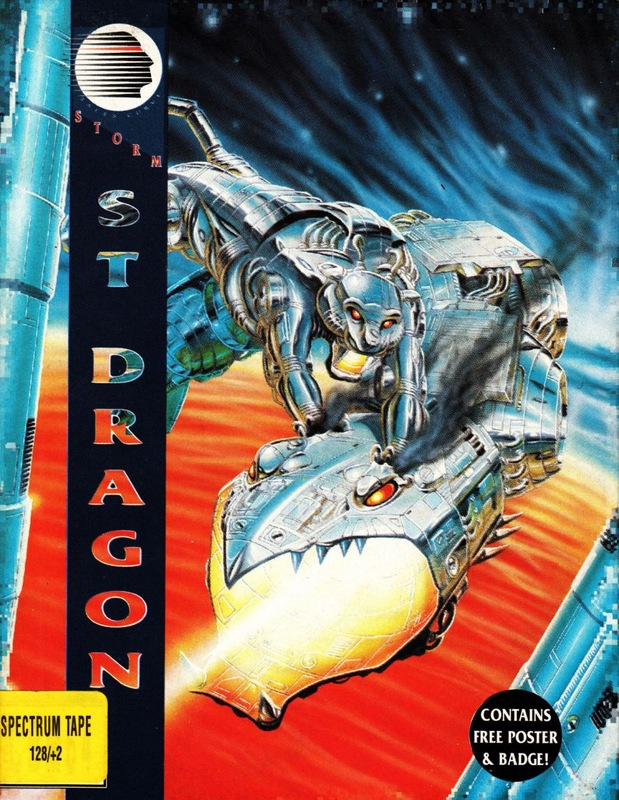
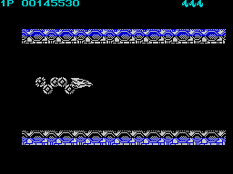

Saint Dragon


{kind=link}

| Publisher: | Storm |
| Price: | £9.99 / £14.99 |
| Year: | 1990 |
| Source: | CRASH, Issue 82 |

A force of terrorising monster machines has risen to conquer the Galaxy. Made of pure evil they are attacking and destroying the peaceful races one by one. Soon there will be no one left and the cyborg monsters’ ultimate dream will have come true: the galaxy will be theirs. But there is hope! One of the cyborgs rebels — a dragon, part animal part machine. Dubbed Saint Dragon, he begins the battle to return the galaxy to normal.
Saint Dragon is a reverse of the Saint George and the dragon legend. Instead of a gallant knight on a white horse we now have a great dragon with an armoured tail! As this dragon you must battle through five horizontally scrolling levels of the most hideous monsters you’ve ever seen, including armoured pumas, mechanical cobras and a giant cyborg bull. The idea is to blast everything in sight — your only worry being to protect the dragon’s head. A hit there and he blows up into space debris. This is where the armoured tail comes into play. It can be used as a protective shield around the sensitive head.

What would a shoot-em-up be without the option of building up your weapons into bigger and brighter things? You start off with a basic plasma bolt launcher and fireball, and can increase it to bouncing balls, turrets and a maximum of five plasmas, all the better to bash them with!
There’s only one way to describe Saint Dragon: hot! You’re addicted from the second it loads. Of course, moaners will say ‘it’s only another shoot-em-up’, but this one with a difference. The dragon with its long swishing tail makes a refreshing change from the endless space ships that have cluttered up other games. As well as being great to look at as it follows you around the screen it also acts as an effective barrier from the barrage of enemy fire.
Saint Dragon has great graphics. Backgrounds, sprites and scenery are excellently drawn and animated with plenty of colour, a feature that makes the game stand out. I found the game agonizingly difficult to begin with, but once you memorise the patterns the enemies come in you can soon be on your way to higher levels.
As a truly magnificent conversion of the Jaleco arcade machine Saint Dragon is a well deserved CRASH Smash.
NICK — 92%
The first thing that impressed me was the continue play option: so many games lack this vital piece of kit and it’s so annoying to get so far only to have to start all over again. The game’s tough, make no mistake about it, and don’t think that just because the tail acts as a shield the going is easy. It takes a good few games just to find the right position to place the tail in for certain types of attack (ie from the ground). The main sprite moves very smoothly, and despite the fair bit of colour on screen there’s little colour clash. A tough and very challenging game, buy it now.
MARK — 92%
RATING
An outstanding conversion of the Jaleco coin-op — must be played to be believed.
| Presentation: | 88% |
| Graphics: | 89% |
| Sound: | 85% |
| Playability: | 91% |
| Addictivity: | 90% |
| Overall: | 92% |